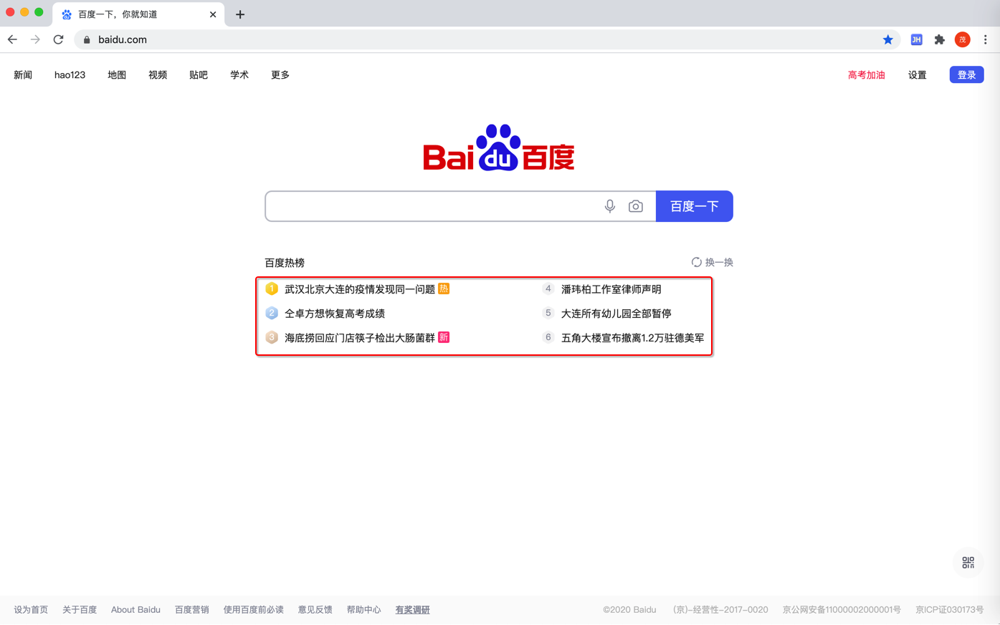

抓取百度热榜
具体详见：
- 【记录】演示如何实现简单爬虫：用Python提取百度首页中百度热榜内容列表
- 【已解决】用Python代码获取到百度首页源码并提取保存百度热榜内容列表
- 【已解决】Mac中用Chrome开发者工具分析百度首页的百度热榜内容加载逻辑
- 【已解决】用Python爬虫框架PySpider实现爬虫爬取百度热榜内容列表
目标
爬取百度首页
百度一下，你就知道
中的 百度热榜的内容的标题的列表：

希望输出的内容：
一个字符串列表：
- 武汉北京大连的疫情发现同一问题
- ...
- 五角大楼宣布撤离1.2万驻德美军
保存格式，暂定为csv文件。
先了解基础逻辑
入手之前，先要了解清楚：
- 写爬虫的思路
- 先去（用工具）分析流程
- 此处：用Chrome中 开发者工具 去分析
- 用Chrome的开发者工具分析百度首页的内容加载的流程
- 此处：用Chrome中 开发者工具 去分析
- 再去用代码实现逻辑
- 此处：用Python代码实现
- 要做的事情可以分成3个步骤
- Download=下载：html网页源码
- 期间可能涉及
- 多次利用Chrome的开发者工具去调试页面内容加载逻辑
- 期间可能涉及
- Parse=分析：分析html中源码中我们要的内容的提取规则是什么
- 需要事先
- 分析要抓取的内容，所对应的规则
- 然后用代码实现规则，提取内容
- 分析要抓取的内容，所对应的规则
- 需要事先
- Save=保存：把抓取到的内容保存出来
- Download=下载：html网页源码
- 先去（用工具）分析流程